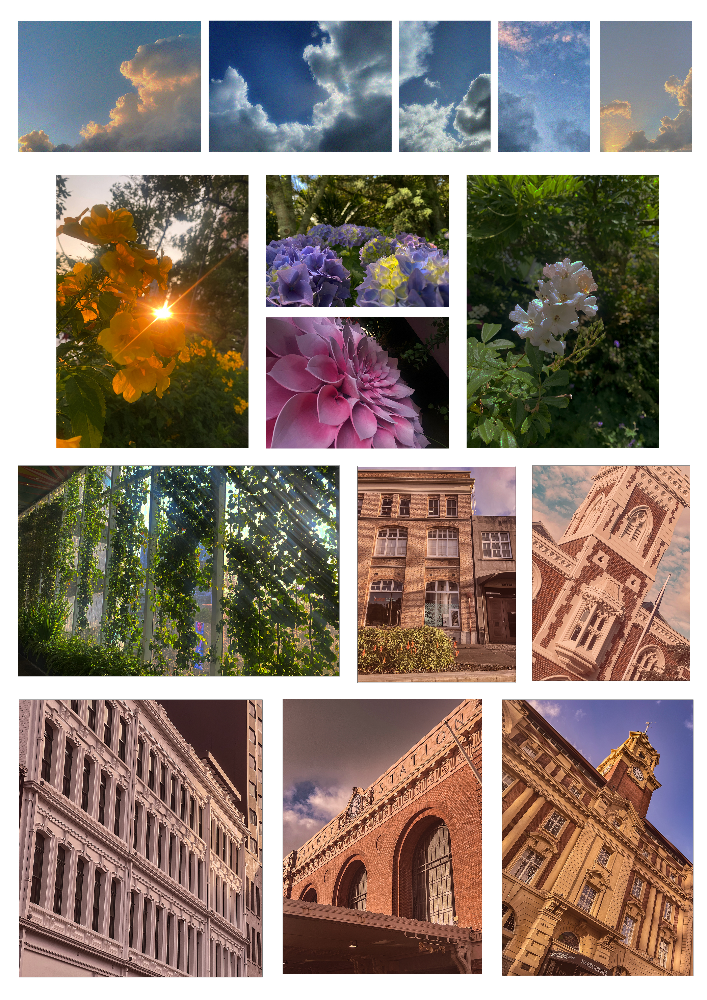
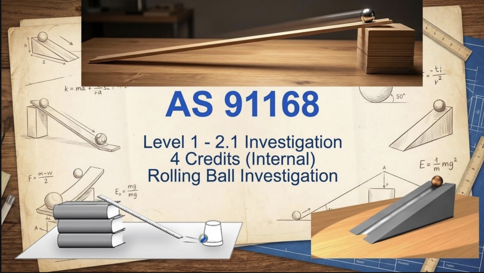
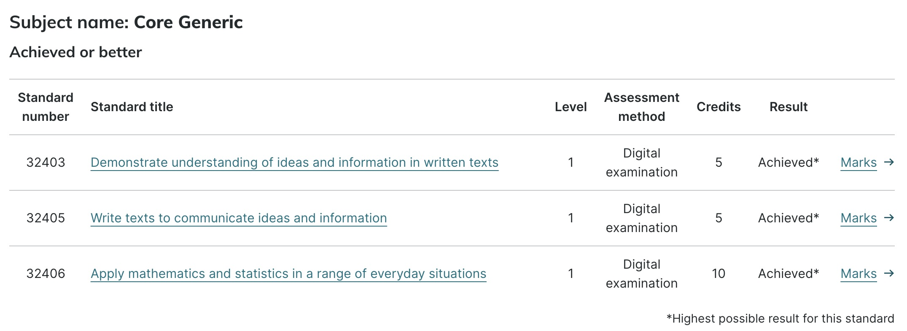

At OSC this year, through semester one and halfway through semester two, I have completed a few projects that I am very proud of. For example:

On the right is the final project for my PHO1 class. As I mentioned on the skills and strengths page under "perseverance", the Tuakiri project was a creation I am very proud of. It took a lot of time and contionous work to get it done on time.
As someone who is still developing my time managemnt skills, being able to make steady progress and only feeling rushed near the very end was a new feeling for me and a challenge that I successfully completed. This and the reward that taking inititave to complete on time definitely played a major part in the proudness I have for it.
I have had many achievements so far at OSC, through assesments, checkpoints and tests/exams.

During physics in semester one, I completed the AS91168 level 2 (or 2.1) internal assessment with achieved after a quick re-sub. I was and still am so happy about this. I got the 4 credits and experience working under stress in exam conditions.
Initially, the internal scared me a lot and made me doubt my abilites. However, a lot of perserverance, trust, focus and positive self-talk before each session helped me continue and complete on time with a few minor issues that I later fixed in the re-sub.

During physics in semester one, I completed the AS91168 level 2 (or 2.1) internal assessment with achieved after a quick re-sub. I was and still am so happy about this. I got the 4 credits and experience working under stress in exam conditions.
Initially, the internal scared me a lot and made me doubt my abilites. However, a lot of perserverance, trust, focus and positive self-talk before each session helped me continue and complete on time with a few minor issues that I later fixed in the re-sub.